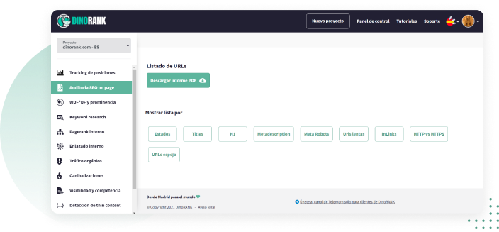

Detecta errores y oportunidades de mejora y optimiza el posicionamiento orgánico de tu web
DinoRANK te da la hoja de ruta completa en un solo clic

Si eres consultor SEO, tienes un blog, un ecommerce o trabajas tus propios nichos y quieres mejorar tus ingresos, tienes que conseguir que tu proyecto web atraiga tráfico orgánico y escale puestos en los resultados de Google, para mejorar la conversión.
Eso ya lo sabes.
Pero no vale tener una idea general o aproximada de los problemas que tiene tu proyecto digital.
Si quieres trabajar de forma seria y dar a tus clientes un servicio profesional para mejorar sus resultados, no puedes fiarte de los datos que te dan las herramientas SEO gratuitas ni puedes liarte con herramientas muy grandes y complicadas de interpretar, porque vas a perder el tiempo.
Y el tiempo es dinero.
Con la Auditoría SEO on page de DinoRANK tendrás una lista de los errores a corregir para aumentar el tráfico tu página web, blog o ecommerce y ahorrar tiempo
Esto es lo que te ofrece:
Estado de las redirecciones 2XX, 3XX, 4XX y 5XX.
Te dice los H1, title y metadescription duplicados o vacíos.
Informa de las URLs lentas, páginas no index, no follow...
Descarga de informes personalizados.
Cómo funciona Auditoría SEO on page
Vamos a ver paso a paso cómo hacer una Auditoría SEO con DinoRANK.
El punto de partida es seleccionar en la herramienta el proyecto que quieres auditar y hacer clic.
-
Gráfico resumen con las métricas principales.

Esa gráfica te ofrece un resumen muy visual de todo lo que tienes que trabajar de esa página web si quieres realizar una Auditoría SEO efectiva: URLs sin indexar, URLs duplicadas y URLs lentas.
-
Detalles de Auditoría SEO.

-
Aquí puedes ver el estado de todas las URLs de tu web.
-
Indica si hay errores 200 (el estado de la URL es correcto), notificaciones 3XX (dicen si hay una redirección sobre esa URL; no tiene por qué ser negativo, pero lo mejor siempre es comprobar que está correcto); 4XX que indican que una página no se encuentra y eso puede afectar al posicionamiento y los 5XX son errores de servidor y es posible que tengas que contactar con tu proveedor de hosting.
-
Titles. Son los títulos que aparecen en los resultados de búsqueda de Google y son distintos del H1. DinoRANK te dice si están duplicados o sin rellenar y aparecen todas las URLs para que las puedas comprobar.
-
H1. Es el encabezado principal, el título del contenido. Indica si están duplicados o sin H1.
-
Metadescription. Son los textos que aparecen en los resultados de búsqueda de Google. DinoRANK te dice cuales están duplicadas o no tienen metadescription.
Información sobre los meta robots.
Hay tres opciones:
-
No index. Indican a Google que no indexe esa URL porque no interesa que aparezca en los resultados de búsqueda, por ejemplo, las páginas de política de privacidad, cookies, etc.
-
No follow. Así se indica a los buscadores que no sigan un enlace, por ejemplo, si no deseas que Google siga un determinado enlace externo.
-
Nosnippet. Los snippet que son el conjunto de title y la metadescription. Con esta opción se les dice a los buscadores que no muestren el snippet de una URL en los resultados de búsqueda.
-
URLs lentas. DinoRANK indica todas las URLs que tardan más de 1 segundo en cargar. Afecta a la experiencia de usuario y Google lo penaliza.
-
Inlinks. Ofrece un listado de todas las URLs de tu web junto con los enlaces internos que apuntan a cada una de ellas.
-
Protocolo http vs https. DinoRANK comprueba si tu página web tiene o no protocolo seguro.
-
URLs espejo. Son las URLS iguales, solo se diferencian en que terminan en barra (/) o sin ella. Google las interpreta como contenido duplicado y lo penaliza.
Después de revisar todos los detalles de la Auditoría SEO, DinoRANK te ofrece la opción de descargar un Informe profesional en PDF para que se lo puedas entregar a tu cliente con los problemas que tiene su web y las soluciones que planteas a cada uno de ellos.
Ahorra tiempo y gana más dinero haciendo Auditorías SEO on page rápidas y profesionales con DinoRANK
Mejora la estrategia SEO de tu página web con una Auditoría SEO rápida y efectiva
Evita el contenido duplicado y optimiza la intención de búsqueda del usuario.
Testimonios de usuarios de DinoRANK
Opiniones de clientes que usan DinoRANK en su día a día para mejorar su visibilidad.
“Es imposible hacer SEO sin los datos que DinoRank proporciona.
Ha optimizado mucho nuestro trabajo en la agencia, tanto a la hora de hacer SEO on Page, como para ver el progreso de nuestros clientes y el rendimiento de cada recurso.
La mayor ventaja es poder ver todos los problemas de una página con un sencillo análisis.
También nos ayuda a hacer seguimiento del posicionamiento de las palabras clave y a conocer con detalle el CPC y la competencia de cada palabra clave.”

María Ponsoda
CEO Seoriginalsweb.com
“La gran virtud de Dinorank es que es una herramienta SEO muy económica pero también muy completa.
Cuando inicias un proyecto intentas contener los gastos usando mil y una herramientas gratuitas para analizar las métricas de tu web. Con Dinorank, no tengo que saltar de herramienta en herramienta.
Su Keyword research ha cambiado mi manera de afrontar la redacción de los posts. La cantidad de palabras clave derivadas y la rapidez con las que se logran, me enamoró desde el primer momento.
La funcionalidad que más me ha sorprendido es el Tracking de posiciones. Es muy útil para controlar la evolución de mis keywords y ver cómo reacciona la competencia.”

Francisco Marhuenda Sala.
Webmaster laguíadelchollo.com
“Gracias a DinoRANK, he aprendido a distribuir el PageRank y los niveles de clicks para dar fuerza a las partes que más me interesan de mi página web.
Antes no sabía lo importante que es la distribución de un buen interlinking dentro de mis proyectos.
Reviso continuamente el tracking de posiciones para ver como aumenta la visibilidad de mi web gracias al balance de mejora que he implementado con esta Suite.
He aumentado el posicionamiento de mi página web para las palabras clave más fuertes y más importantes de mis proyectos.
DinoRANK me ha ayudado de forma muy visual e intuitiva a desarrollar una mejora del SEO On Page de mi web, a enriquecer los textos gracias al estudio de la competencia y hacer una auditoría de 0 a 100 que nada tiene que envidiar a Crawlers y/o herramientas SEO de precios bastante más elevados.”

Sergio Cordero
sergiocordero.net
“Mi proyecto ha crecido en tráfico, autoridad y posicionamiento en palabras clave superimportantes para mi negocio. A pesar de haber trabajado con otras, la magia de WDF*DF y prominencia para saber, en un solo vistazo, lo que deben tener mis artículos a nivel de estructura es brutal y no necesito tener profundos conocimientos SEO.
Al principio dudé por ser menos conocida que Semrush o Ahrefs pero he conseguido rankear en los primeros lugares de Google para KW con intencionalidades de búsqueda muy competidas.
DinoRANK es intuitiva. Te dice en un solo vistazo la estructura que deberían tener tus artículos para posicionar por encima de la competencia.”
Marja Morante
Copywriter en marjamorante.com
“Tengo varios proyectos, y me ha sido muchísimo más fácil encontrar nuevas keywords para posicionar y saber por las que ya estaba posicionando.
Hago keyword research para mis proyectos y de mis clientas casi a diario. La auditoría la uso muchísimo tanto para posibles clientes, como para controlar mis proyectos.
Y la función de visibilidad es genial. Poder ver keywords de otras webs sin tener acceso a su search console.
Mi web principal está subiendo visitas y me estoy posicionando en keywords muy interesantes. He comenzado un proyecto poco y ya está consiguiendo tráfico orgánico interesante, sin haber invertido en linkbuilding, solo con optimización de contenidos.
Con DinoRANK es muy fácil hacer keyword research, la auditoría completa del sitio y la visibilidad.”
Raquel García Arévalo (Taisa)
Informática especializada en diseño web en WordPress https://www.taisa-Designer.com
“Probé Dinorank para 3 de mis páginas web, dos de ellas son nichos y una, mi proyecto principal.
No esperaba que por ese precio me diera tanto. Al principio dudé de si sería buena, pero tras probar Semrush, Ahrefs, Ubersuggest, ninguna me ha enamorado como Dinorank.
La uso a diario para hacer seguimiento de las keywords. La función de prominencia semántica ha sido un gran sorpresa, me ha permitido escalar posiciones muy rápido y me ha generado un incremento en los ingresos de la WEB.
Ver a golpe de click toda la estructura y fuerza interna de la página, poder realizar de manera sencilla una auditoría de SEO on Page o detectar canibalizaciones... me parece brutal.
Además, es la primera suite SEO todo en uno que he probado que te hace sentir en su comunidad y partícipe del proyecto, y lo valoro mucho.
Probé un mes y tengo claro que ya no me voy de Dinorank. Es una herramienta sencilla, completa, a bajo coste y que te hace llevar tu proyecto a dónde quieras, facilitándote la vida.”

Fabio Serna
https://www.opinionde.online/
“DinoRank me ha facilitado con acciones sencillas y concretas qué puedo mejorar de mi web, ahora sé que hacer para potenciar las URLs que más me interesan posicionar en mi web.
Al inicio vi una herramienta tremendamente simple y eso me hizo dudar (precio asequible y a la vez interfaz muy visual y aparentemente sencilla). Ahora veo que eso no excluye que sea tremendamente potente y útil para realizar acciones concretas y efectivas.
Me gusta mucho el Trakeo de posiciones para ver cómo influyen mis acciones, las cuales las planifico con la herramienta WDF*DF.
Gracias a la herramienta de Canibalización y las indicaciones que te da DinoRank he conseguido que Google de peso a la URL pensada para atacar determinadas KW y no perder el potencial de cada una de ellas.”

Albert Rodríguez
Socio fundador www.capelli.es
“DinoRANK me ha ahorrado mucho tiempo y he conseguido posicionar ya muchas keywords potenciales y genéricas.
Dean lleva aportando muchos años, por eso la probé y aquí sigo.
Las funciones que más uso son el tracking de posiciones y optimización de contenido en base a las recomendaciones de keywords según la competencia mejor posicionada. La auditoría que ofrece también es muy práctica.
Con DinoRANK gano tiempo y hago subir posiciones a mis clientes.”
Elena GC.
Freelance Marketing Online
La suscripción mensual al Plan Starter de DinoRANK cuesta 25 € al
mes.
Si te suscribes al plan anual puedes ahorrar hasta un
20%